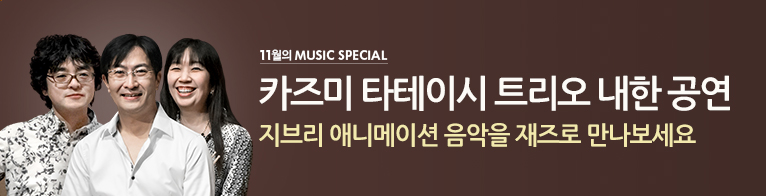

다양한 이슈와 테마로 가장 HOT한 음악계 소식을 만나보세요

이웃집 토토로, 하울의 움직이는 성, 센과 치히로의 행방불명 등 스튜디오 지브리의 가슴 두근거리는 아름다운 명곡을 피아노 트리오의 스윙하고 로맨틱한 연주로 다시 태생시키며 국내외에서 큰 인기를 얻고 있는 일본의 피아노트리오 Kazumi Tateishi Trio(카즈미 타테이시 트리오)의 2011년~2015년에 이은 여섯 번째 내한공연이 오는 12월 09일(금) 저녁 8시 창원 315아트센터 소극장, 12월10일(토) 오후 6시 대구문화예술회관 팔공홀, 12월 11일(일) 오후 5시 수원 경기도문화의전당 소극장, 12월 13일(화) 저녁 8시 세종문화회관 M 씨어터, 12월16일(금) 저녁 8시 광주 빛고을시민문화관, 12월 17일(토) 오후 6시 성남아트센터 콘서트홀, 12월 18일(일) 오후 5시 화성(동탄) 반석아트홀, 12월 28일(수) 저녁 8시 부산 영화의전당 하늘연극장에서 열린다.
자료제공 : 지누락엔터테인먼트 | 등록 : 2016.11.22